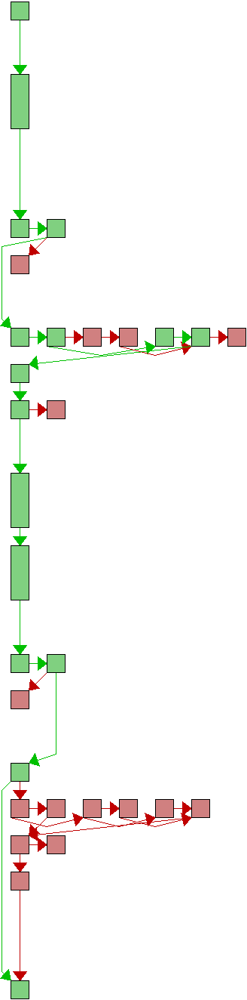
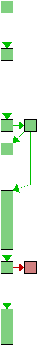
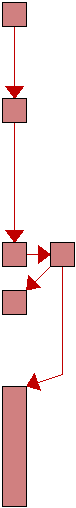
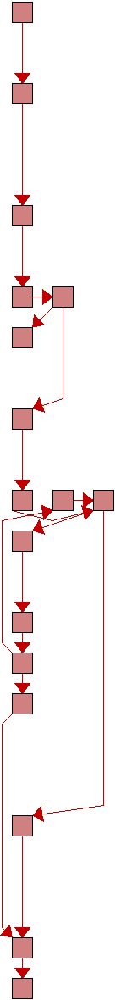

source src/odb_mempack.c
| Line | Flow | Count | Block(s) | Source |
|---|---|---|---|---|
| 1 | - | /* | ||
| 2 | - | * Copyright (C) the libgit2 contributors. All rights reserved. | ||
| 3 | - | * | ||
| 4 | - | * This file is part of libgit2, distributed under the GNU GPL v2 with | ||
| 5 | - | * a Linking Exception. For full terms see the included COPYING file. | ||
| 6 | - | */ | ||
| 7 | - | |||
| 8 | - | #include "common.h" | ||
| 9 | - | |||
| 10 | - | #include "git2/object.h" | ||
| 11 | - | #include "git2/sys/odb_backend.h" | ||
| 12 | - | #include "git2/sys/mempack.h" | ||
| 13 | - | #include "futils.h" | ||
| 14 | - | #include "hash.h" | ||
| 15 | - | #include "odb.h" | ||
| 16 | - | #include "array.h" | ||
| 17 | - | #include "oidmap.h" | ||
| 18 | - | |||
| 19 | - | #include "git2/odb_backend.h" | ||
| 20 | - | #include "git2/types.h" | ||
| 21 | - | #include "git2/pack.h" | ||
| 22 | - | |||
| 23 | - | struct memobject { | ||
| 24 | - | git_oid oid; | ||
| 25 | - | size_t len; | ||
| 26 | - | git_object_t type; | ||
| 27 | - | char data[GIT_FLEX_ARRAY]; | ||
| 28 | - | }; | ||
| 29 | - | |||
| 30 | - | struct memory_packer_db { | ||
| 31 | - | git_odb_backend parent; | ||
| 32 | - | git_oidmap *objects; | ||
| 33 | - | git_array_t(struct memobject *) commits; | ||
| 34 | - | }; | ||
| 35 | - | |||
| 36 |  | 3 | 2 | static int impl__write(git_odb_backend *_backend, const git_oid *oid, const void *data, size_t len, git_object_t type) |
| 37 | - | { | ||
| 38 | 3 | 2 | struct memory_packer_db *db = (struct memory_packer_db *)_backend; | |
| 39 | 3 | 2 | struct memobject *obj = NULL; | |
| 40 | - | size_t alloc_len; | ||
| 41 | - | |||
| 42 | 3 | 2,3 | if (git_oidmap_exists(db->objects, oid)) | |
| 43 | ##### | 4 | return 0; | |
| 44 | - | |||
| 45 | 3 | 5-11 | GIT_ERROR_CHECK_ALLOC_ADD(&alloc_len, sizeof(struct memobject), len); | |
| 46 | 3 | 12 | obj = git__malloc(alloc_len); | |
| 47 | 3 | 13,14 | GIT_ERROR_CHECK_ALLOC(obj); | |
| 48 | - | |||
| 49 | 3 | 15 | memcpy(obj->data, data, len); | |
| 50 | 3 | 15 | git_oid_cpy(&obj->oid, oid); | |
| 51 | 3 | 16 | obj->len = len; | |
| 52 | 3 | 16 | obj->type = type; | |
| 53 | - | |||
| 54 | 3 | 16,17 | if (git_oidmap_set(db->objects, &obj->oid, obj) < 0) | |
| 55 | ##### | 18 | return -1; | |
| 56 | - | |||
| 57 | 3 | 19 | if (type == GIT_OBJECT_COMMIT) { | |
| 58 | ##### | 20-25 | struct memobject **store = git_array_alloc(db->commits); | |
| 59 | ##### | 26,27 | GIT_ERROR_CHECK_ALLOC(store); | |
| 60 | ##### | 28 | *store = obj; | |
| 61 | - | } | ||
| 62 | - | |||
| 63 | 3 | 29 | return 0; | |
| 64 | - | } | ||
| 65 | - | |||
| 66 | 6 | 2 | static int impl__exists(git_odb_backend *backend, const git_oid *oid) | |
| 67 | - | { | ||
| 68 | 6 | 2 | struct memory_packer_db *db = (struct memory_packer_db *)backend; | |
| 69 | - | |||
| 70 | 6 | 2 | return git_oidmap_exists(db->objects, oid); | |
| 71 | - | } | ||
| 72 | - | |||
| 73 |  | 2 | 2 | static int impl__read(void **buffer_p, size_t *len_p, git_object_t *type_p, git_odb_backend *backend, const git_oid *oid) |
| 74 | - | { | ||
| 75 | 2 | 2 | struct memory_packer_db *db = (struct memory_packer_db *)backend; | |
| 76 | - | struct memobject *obj; | ||
| 77 | - | |||
| 78 | 2 | 2,3 | if ((obj = git_oidmap_get(db->objects, oid)) == NULL) | |
| 79 | 1 | 4 | return GIT_ENOTFOUND; | |
| 80 | - | |||
| 81 | 1 | 5 | *len_p = obj->len; | |
| 82 | 1 | 5 | *type_p = obj->type; | |
| 83 | 1 | 5 | *buffer_p = git__malloc(obj->len); | |
| 84 | 1 | 6,7 | GIT_ERROR_CHECK_ALLOC(*buffer_p); | |
| 85 | - | |||
| 86 | 1 | 8 | memcpy(*buffer_p, obj->data, obj->len); | |
| 87 | 1 | 8 | return 0; | |
| 88 | - | } | ||
| 89 | - | |||
| 90 |  | ##### | 2 | static int impl__read_header(size_t *len_p, git_object_t *type_p, git_odb_backend *backend, const git_oid *oid) |
| 91 | - | { | ||
| 92 | ##### | 2 | struct memory_packer_db *db = (struct memory_packer_db *)backend; | |
| 93 | - | struct memobject *obj; | ||
| 94 | - | |||
| 95 | ##### | 2,3 | if ((obj = git_oidmap_get(db->objects, oid)) == NULL) | |
| 96 | ##### | 4 | return GIT_ENOTFOUND; | |
| 97 | - | |||
| 98 | ##### | 5 | *len_p = obj->len; | |
| 99 | ##### | 5 | *type_p = obj->type; | |
| 100 | ##### | 5 | return 0; | |
| 101 | - | } | ||
| 102 | - | |||
| 103 |  | ##### | 2 | int git_mempack_dump(git_buf *pack, git_repository *repo, git_odb_backend *_backend) |
| 104 | - | { | ||
| 105 | ##### | 2 | struct memory_packer_db *db = (struct memory_packer_db *)_backend; | |
| 106 | - | git_packbuilder *packbuilder; | ||
| 107 | - | uint32_t i; | ||
| 108 | ##### | 2 | int err = -1; | |
| 109 | - | |||
| 110 | ##### | 2,3 | if (git_packbuilder_new(&packbuilder, repo) < 0) | |
| 111 | ##### | 4 | return -1; | |
| 112 | - | |||
| 113 | ##### | 5 | git_packbuilder_set_threads(packbuilder, 0); | |
| 114 | - | |||
| 115 | ##### | 6,10,11 | for (i = 0; i < db->commits.size; ++i) { | |
| 116 | ##### | 7 | struct memobject *commit = db->commits.ptr[i]; | |
| 117 | - | |||
| 118 | ##### | 7 | err = git_packbuilder_insert_commit(packbuilder, &commit->oid); | |
| 119 | ##### | 8 | if (err < 0) | |
| 120 | ##### | 9 | goto cleanup; | |
| 121 | - | } | ||
| 122 | - | |||
| 123 | ##### | 12 | err = git_packbuilder_write_buf(pack, packbuilder); | |
| 124 | - | |||
| 125 | - | cleanup: | ||
| 126 | ##### | 13 | git_packbuilder_free(packbuilder); | |
| 127 | ##### | 14 | return err; | |
| 128 | - | } | ||
| 129 | - | |||
| 130 | 5 | 2 | int git_mempack_reset(git_odb_backend *_backend) | |
| 131 | - | { | ||
| 132 | 5 | 2 | struct memory_packer_db *db = (struct memory_packer_db *)_backend; | |
| 133 | 5 | 2 | struct memobject *object = NULL; | |
| 134 | - | |||
| 135 | 8 | 2-5 | git_oidmap_foreach_value(db->objects, object, { | |
| 136 | - | git__free(object); | ||
| 137 | - | }); | ||
| 138 | - | |||
| 139 | 5 | 6 | git_array_clear(db->commits); | |
| 140 | - | |||
| 141 | 5 | 7 | git_oidmap_clear(db->objects); | |
| 142 | - | |||
| 143 | 5 | 8 | return 0; | |
| 144 | - | } | ||
| 145 | - | |||
| 146 | 5 | 2 | static void impl__free(git_odb_backend *_backend) | |
| 147 | - | { | ||
| 148 | 5 | 2 | struct memory_packer_db *db = (struct memory_packer_db *)_backend; | |
| 149 | - | |||
| 150 | 5 | 2 | git_mempack_reset(_backend); | |
| 151 | 5 | 3 | git_oidmap_free(db->objects); | |
| 152 | 5 | 4 | git__free(db); | |
| 153 | 5 | 5 | } | |
| 154 | - | |||
| 155 | 5 | 2 | int git_mempack_new(git_odb_backend **out) | |
| 156 | - | { | ||
| 157 | - | struct memory_packer_db *db; | ||
| 158 | - | |||
| 159 | 5 | 2,3 | assert(out); | |
| 160 | - | |||
| 161 | 5 | 4 | db = git__calloc(1, sizeof(struct memory_packer_db)); | |
| 162 | 5 | 5,6 | GIT_ERROR_CHECK_ALLOC(db); | |
| 163 | - | |||
| 164 | 5 | 7,8 | if (git_oidmap_new(&db->objects) < 0) | |
| 165 | ##### | 9 | return -1; | |
| 166 | - | |||
| 167 | 5 | 10 | db->parent.version = GIT_ODB_BACKEND_VERSION; | |
| 168 | 5 | 10 | db->parent.read = &impl__read; | |
| 169 | 5 | 10 | db->parent.write = &impl__write; | |
| 170 | 5 | 10 | db->parent.read_header = &impl__read_header; | |
| 171 | 5 | 10 | db->parent.exists = &impl__exists; | |
| 172 | 5 | 10 | db->parent.free = &impl__free; | |
| 173 | - | |||
| 174 | 5 | 10 | *out = (git_odb_backend *)db; | |
| 175 | 5 | 10 | return 0; | |
| 176 | - | } |